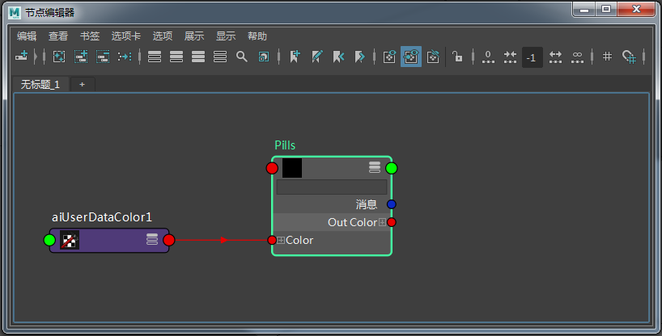
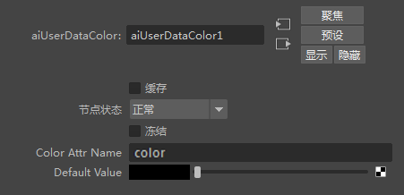
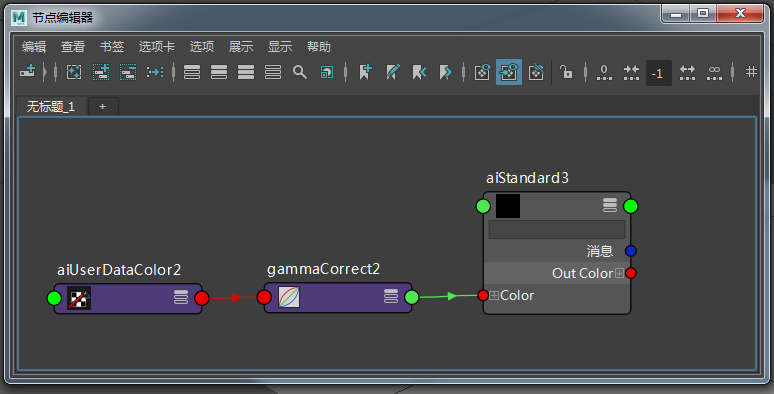
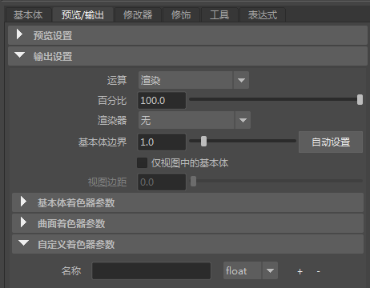
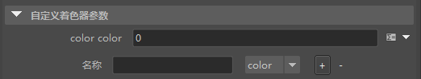
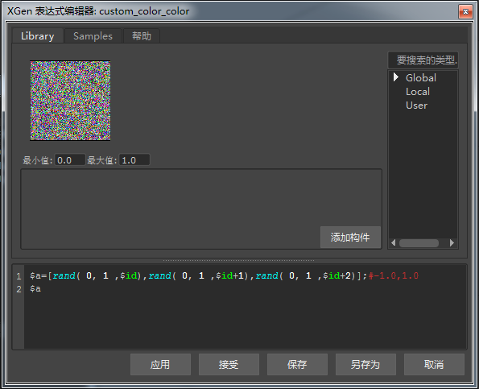
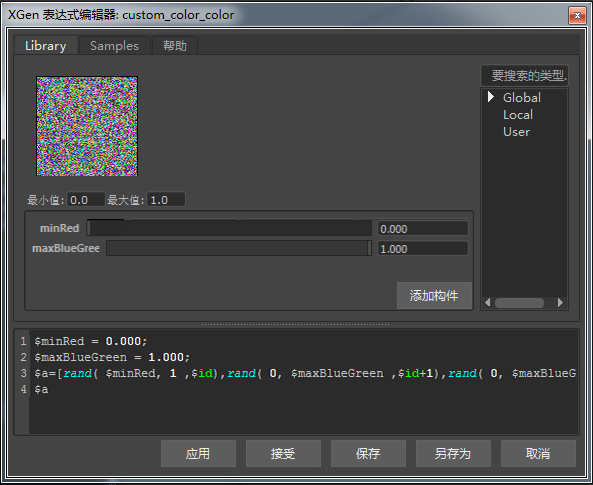

为基本体指定随机颜色
在本教程中，我们将介绍如何结合使用表达式和用户数据节点为不同 XGen 基本体指定随机颜色。
注意：
在开始学习本教程前，建议您另外阅读使用纹理贴图控制基本体教程，其中介绍了如何定义 XGen 基本体的比例。
场景设置

Ai 用户数据颜色节点连接到标准曲面着色器的“颜色”(Color)属性
- 在 Ai 用户数据颜色节点的“颜色属性名称”(Color Attr Name)中键入 color。我们将在 XGen 描述中使用相同的“Color”名称。

将名称“color”添加到 Ai 用户数据颜色节点中的“颜色属性名称”(Color Attr Name)
- MtoA 不会对 Ai 用户数据颜色节点进行 Gamma 校正。因此，您需要在 Ai 用户数据颜色 节点与标准曲面着色器的“颜色”(Color) 属性 之间添加一个 *Maya Gamma 校正*节点，如下所示。将“Gamma RGB”的值更改为 0.454。

- 渲染场景。这些药丸是黑色的，因为 Ai 用户数据颜色的“默认值”(Default Value)为黑色。我们需要使用 XGen 中的“自定义着色器参数”(Custom Shader Parameters)将其连接到 XGen 描述。
药丸归档使用 Ai 用户数据颜色节点的默认颜色（黑色）
- 将“密度”(Density)增加到 20 左右，以增加 XGen 基本体归档药丸模型的数量。
自定义着色器参数(Custom Shader Parameters)
- 单击 XGen 中的“预览/输出”(Priview/Output)选项卡，并打开“输出设置”(Output Settings)。您应该会在下方看到“自定义着色器参数”(Custom Shader Parameters)。我们将在这里添加表达式。

自定义着色器参数(Custom Shader Parameters)（底部）
- 在“名称”(Name)文本字段中，键入用于 Ai 用户数据颜色节点的“颜色属性名称”(Color Attr Name)的相同名称。在本例中，我们使用单词“Color”。将“浮点”(float)更改为“颜色”(Color)，因为这是我们想要更改的属性。

“自定义着色器参数”(Custom Shader Parameters)设置为“颜色”(Color)
表达式
- 单击新的“color color”参数右侧的“XGen 表达式编辑器”(XGen Expression Editor)图标 ，然后在“XGen 表达式编辑器”(XGen Expression Editor)中添加以下文本：
$a=[rand(0,1,$id),rand(0,1,$id+1),rand(0,1,$id+2)];#-1.0,1.0 $a 其中，rand 将 RGB 值定义为介于 0 和 1 之间。

“XGen 表达式编辑器”(XGen Expression Editor)中用于将 RGB 值定义为从 0 到 1 的表达式
- 渲染场景。得到的结果应类似下图：
- 如果将 rand 更改为以下值：
$a=[1,rand(0,0.5,$id+1),rand(0,0.5,$id+2)];#-1.0,1.0 $a 得到的结果中虽然包含 RGB 值，但是红色较多，绿色和蓝色较少。
- 如果将 rand 更改为以下值：
$a=[rand(0.5,1,$id),rand(0,0.8,$id+1),rand(0,0.8,$id+2)];#-1.0,1.0 $a 药丸具有更多的颜色变化，因为红色值介于 0.5 和 1 之间。

滑块
- 我们可以创建一些滑块，以便更轻松地调整 RGB 颜色，而不必在“XGen 表达式编辑器”(XGen Expression Editor)中键入值。在“XGen 表达式编辑器”(XGen Expression Editor)中添加以下文本。
$minRed = 0.000; $maxBlueGreen = 1.000; $a=[rand( $minRed,1,$id),rand(0,$maxBlueGreen,$id+1),rand(0,$maxBlueGreen,$id+2)];#-1.0,1.0 $a 您应该会看到出现两个滑块。它们可用于以交互方式预览生成的颜色。这样，我们就不必在每次进行更改后测试渲染场景！

具有特殊新滑块的“XGen 表达式编辑器”(XGen Expression Editor)
本教程到此结束。尽情享受 XGen 表达式带来的乐趣吧！
感谢 Pedro Fernando Gómez 在 XGen 方面提供的帮助。